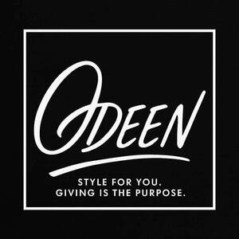

Trade Mark Journal No.2025/050 12 December 2025
UK00004302587 28 November 2025 (25,35)

- Class 25
- Clothing; Ready-to-wear clothing; Leisure clothing; Knitwear [clothing]; Casual clothing; Clothing for sports; Sports clothing; Parts of clothing, footwear and headgear; Clothing for leisure wear; Woolen clothing; Maternity clothing; Cashmere clothing; Jerseys [clothing]; Leather clothing; Clothing of leather; Leather (Clothing of -); Furs [clothing]; Jackets [clothing]; Plush clothing; Jackets being sports clothing; Ready-made clothing; Linen clothing; Athletic clothing; Gloves [clothing]; Gloves as clothing; Garments for protecting clothing; Thermal clothing; Clothing layettes; Layettes [clothing]; Headbands [clothing]; Headbands for clothing; Wristbands [clothing]; Denims [clothing]; Clothing for cycling; Fishing clothing; Collars [clothing]; Aprons [clothing]; Pockets for clothing; Silk clothing; Waterproof clothing; Weatherproof clothing; Dance clothing.
- Class 35
- Retail services connected with the sale of clothing and clothing accessories; Retail store services in the field of clothing; Retail services in relation to clothing accessories; Retail services in relation to clothing; Retail services relating to clothing; Online retail store services relating to clothing; Mail order retail services for clothing accessories; Online retail services relating to clothing; Mail order retail services for clothing; Retail services in relation to downloadable virtual clothing; Mail order retail services connected with clothing accessories; Online retail services for downloadable virtual clothing; Retail services in relation to footwear; Online retail services in relation to downloadable virtual clothing; Retail services in relation to homeware; Wholesale services in relation to clothing; Business management of wholesale and retail outlets; Retail services relating to jewelry; Unmanned retail store services relating to food; Retail services connected with the sale of furniture; Retail services in relation to jewellery; Retail services in relation to bicycle accessories; Retail services in relation to furniture; Retail services in relation to downloadable virtual footwear; Retail services in relation to furnishings; Wholesale services relating to clothing; Retail services relating to furniture; Retail services in relation to fabrics; Retail services in relation to car accessories; Online retail services relating to jewelry; Retail services in relation to toys; Retail services in relation to headgear; Shop retail services connected with carpets; Retail services relating to automobile accessories; Retail services relating to home textiles; Retail services relating to food; Retail services in relation to saddlery; Online retail services relating to cosmetics; Online retail store services relating to cosmetic and beauty products; Retail services in relation to bags; Unmanned retail store services relating to drink; Online retail services in relation to downloadable virtual footwear; Retail services relating to furs; Retail services in relation to stationery supplies; Online retail services relating to handbags; Retail services in relation to toiletries; Online retail services relating to toys; Retail services in relation to downloadable virtual headwear; Retail services in relation to foodstuffs.
ODEEN LTD